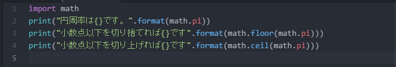
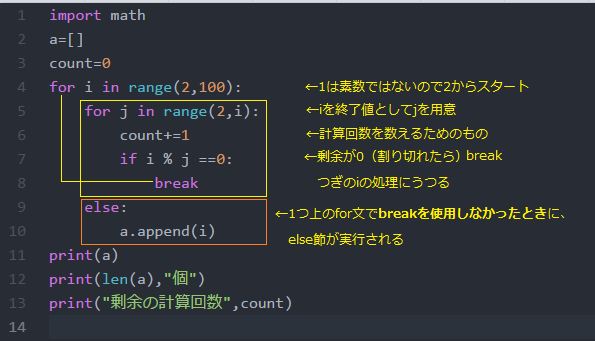
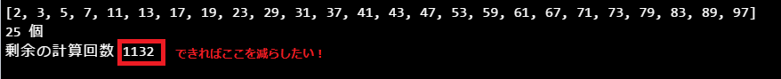
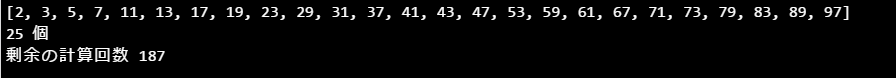

これまではPythonに最初から組み込まれている関数を使ってきました。
このような関数以外にも、明示的に宣言することでPythonやほかの開発者が用意した関数などを自由に自分のプログラムに取り入れることができます。
モジュール（module）は別のプログラムに取り込んで使うことを前提として、ある機能をひとまとめにしたファイルをいいます。
Pythonが公式に用意したモジュールをまとめたものを標準ライブラリといいます。そのうちのmathモジュールとrandomモジュールを課題では使ってみます。
また、外部によるライブラリが豊富に用意されています。有名なものとして機械学習用のライブラリscikit-learn（サイキットラーン）などがあります。
| #mathモジュールでできることの例 | |
|
math.sqrt(x) |
#xの平方根 |
1行目のimport文でmathモジュールを取り込みことを宣言しています。
続けて2行目でmathモジュールが提供する定数piを参照しています。
3,4行目ではmathモジュールが提供する関数を呼び出しています。
floor関数：引数の小数点以下を切り捨て
ceil関数：引数のを小数点以下で切り上げ

▼実行結果
作成例の基本方針としては、
mathモジュールの呼び出し（ただし作成例では出番がない）
空のリストaと変数countを用意
for文で 変数iを2から100までの整数として順に出力
for文で 変数ｊ（2からi）まで用意
iをjで割った余りを調べます。
if文で iが素数であるかどうか判定する条件式
素数ではない→なにもせずにスルー
素数と判定→iをリストに代入
▼作成例

▼出力結果

例題17では、2からｊまで片っ端から割って調べていきましたが、計算回数を減らしてください。
つぎの①だけまたは①と②を実装してみましょう。あるいは違うアイディアがあればそれでもOKです。
① 「もしiが(2を除いた)偶数のときは割り算処理をしない」
② 「jの終了値はiの平方根までとする」
→iが素数ではないとき、√i以下の約数をもつ。
i=11の場合√11≒3.31 なので j=1,2,3まで割って調べれば十分だということ。※range関数の終了値に注意してください。
▼出力結果の例
